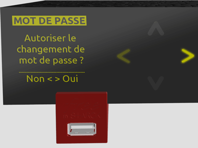

Afin de sécuriser la procédure de changement de mot de passe,
veuillez appuyer sur la flèche de droite qui clignote actuellement sur
la façade de votre Freebox Server.

ERREUR !
La demande de réinitialisation de mot de passe n'a pas été validée à temps.
Voulez vous réessayer ?
ERREUR !
La demande de réinitialisation de mot de passe a été refusée
Voulez vous réessayer ?
ERREUR !
Une erreur inconnue est survenue
Voulez vous réessayer ?
Veuillez appuyer sur la flèche de droite qui clignote actuellement
sur la façade de votre Freebox Server !